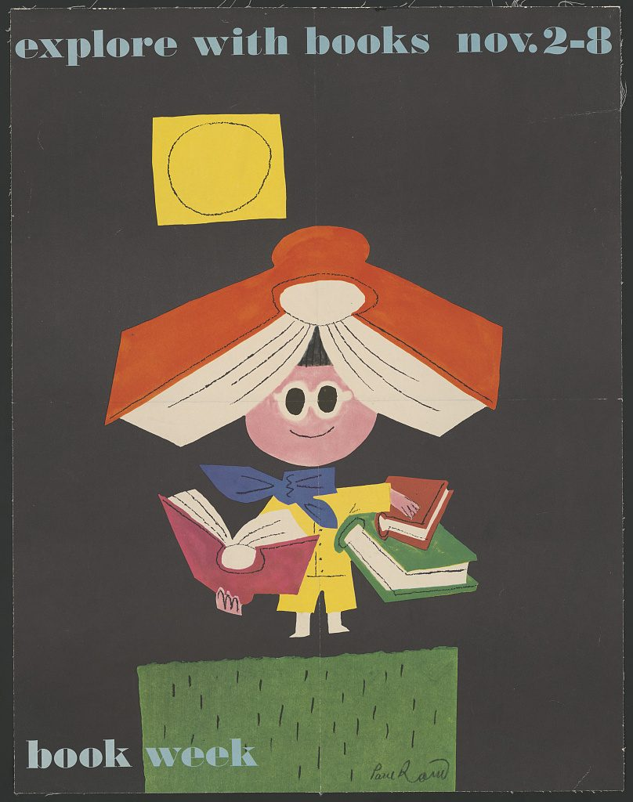

References / Poster / 175
Explore with books, Book Week poster
Paul Rand builds a child from torn and cut paper shapes, with an open orange book for a roof, and sets the words in a lowercase slab on a charcoal ground.
- Source
- Library of Congress: Explore with books, Nov. 2-8. Book week
- Creator
- Paul Rand
- Made
- [1958] (Library of Congress date)
- Style
- Mid-century modern (agent-proposed, not yet reviewed by a person)
- Moods
- Playful, warm, childlike, crafted
- Evidence
- Downloaded and inspected the Library of Congress service image (808 × 1024 px) of the Library’s copy, Prints and Photographs Division, Artist poster filing series. The larger TIFF was not opened.
- Reviewed
- Rights
- Open license, stored. License: no known restrictions. Rights policy
Context
The Library of Congress record gives the title as “Explore with books, Nov. 2-8. Book week”, the date as [1958], the place as [New York], the publisher as not identified, and the artist as Paul Rand (1914–1996). It forms part of the Library’s Artist poster filing series. LoC 2015646529.
The same series holds the 1957 Book Week poster “Explore with books”, which the record says was designed by A&M Provensen. LoC 2015646521.
Observed
- The ground is flat charcoal gray to the edges.
- “explore with books nov. 2-8” runs across the top and “book week” across the foot, in a lowercase slab-serif in pale blue-gray and off-white.
- A mustard square with a loosely drawn black circle stands for the sun.
- A small figure with a round pink face and white glasses stands under a large open orange book worn like a roof. Its body is a yellow coat with a blue bow, and it holds a pink open book and a stack of red and green books.
- The shapes have uneven, cut or torn edges. Thin black lines are drawn over them for the page edges, fingers, and buttons, and do not always follow the shapes.
- The figure stands on a green rectangle with short black grass strokes. “Paul Rand” is signed in script at the lower right.
Why it belongs
The poster shows the overprint idea by hand: color shapes and a separate black line layer that do not register exactly.
The lowercase slab and the childlike figure show the playful side of the style. Measured on the stored image: three hue families, accent chroma 0.53, and a dark background.
Borrow
Draw a thin black line layer over flat color shapes and let it drift off register.
Set a friendly heading in a lowercase slab-serif, and let one hand-signed word or signature balance it.
Measured
Machine-extracted by tools/image-traits.py on . Full measurement.
- Mean chroma
- 0.1
- Palette
- #464241 63%
- #688252 8%
- #e0d1bb 6%
- #323432 5%
- #c15732 5%
- #e5c74a 4%
- #cea098 2%
- #99afb2 1%

